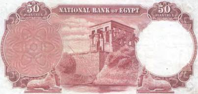
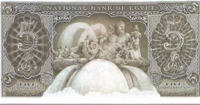
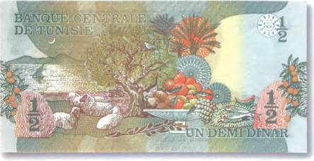
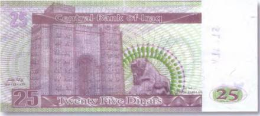

Тайны бумажных денег : Представление о загробной жизни

На оборотной стороне египетской купюры в 50 пиастров 1960 г. на фоне хорошо сохранившегося античного храма друг против друга замерли два каменных барана (рис. 25).
Баран в Древнем Египте символизировал бога Ра, и скульптур, изображающих это животное, сегодня можно найти в Египте множество. Достаточно вспомнить аллею священных овнов в Луксоре, которая послужила кулисами для фильма «Смерть на Ниле» (1978), снятого по произведению Агаты Кристи.

Впрочем, почитание овна было характерно не только для древних египтян. Оно также занимает особое место в таоизме. Специфическое отношение к символике божественного овна отмечалось и у тюркских племен. Поэтому каменные статуи баранов можно встретить как в Китае, так и в Монголии. Имеются они и в Азербайджане. И все же в религиозных верованиях древних египтян животные играли ключевую роль. Самые ранние египетские боги представлялись исключительно под личиной животных. Были среди них коровы, бараны, павианы, крокодилы, собаки, коты, соколы, змеи и даже жуки-скарабеи. Это уже позже они стали принимать человеческое обличье. Такое изображение бога в облике человека можно найти, к примеру, на египетской боне в 5 фунтов 1958 г. (рис. 26).
Но вернемся к нашим баранам! Почитание божественных животных часто выливалось в удивительные ритуалы, которые для нас, людей современности, могут показаться весьма странными. К примеру, если живший при храме священный бык Апис умирал от старости, почитатели его культа отправлялись в странствия по округе на поиски божественного преемника почившему слуге бога Пта. Ну прямо как у тибетцев с их ламами! Однако самым интересным было другое. Священные животные после смерти, как и фараоны, мумифицировались. Учеными были обнаружены кладбища, на которых их хоронили. Благодаря таким археологическим открытиям выяснилось, что в Омбосе поклонялись крокодилам, в Бубастисе — котам, в Ашмунене — ибисам, а в Элефантине — баранам. Изображение пасущихся овечек можно встретить, например, на боне Туниса в полдинара за 1973 г. (рис. 27).


Довольно интересное представление о загробной жизни существовало в легендах о боге дождя Тлалоке. Все несчастные, принесенные ему в жертву, как и все утопленники и убитые молнией попадали в его чудный сад. Последний находился на вершинах самых высоких гор. Там души погибших наслаждались райскими блаженствами.
С божеством дождя Тлалоком, а точнее с одной его статуей, во второй половине XX в. произошел удивительный случай. Было это в 1964 г. По просьбе руководителя Национального антропологического музея в Мехико (Mexico City) власти решили установить огромную статую бога Тлалока у входа в новое здание музея. До тех пор незаконченная скульптура из цельного куска базальта уже больше тысячи лет пролежала в каменоломнях Теотиуакана, где ее по какой-то неизвестной причине оставили древние зодчие. Для транспортировки колоссальной статуи (150 т) из Техаса был пригнан тягач. А для проведения операции выбрали самое засушливое время года. Местные жители с самого начала были против этого предприятия, ибо боялись, что перемещение каменного идола повлечет за собой череду несчастий. Но мексиканским властям удалось задобрить крестьян щедрыми денежными подарками. Тысячи мексиканцев вышли на улицы, чтобы стать свидетелями «переезда» древнеиндейского бога дождя. А затем случилось нечто невероятное! Когда Тлалока стали сгружать во дворе музея, на столицу страны вдруг обрушился сильнейший ливень… Это было настолько неожиданно (в это время года в Мексике царит засуха), что суеверные жители в один голос вновь заговорили о проклятии Тлалока. Тем более что повод для беспокойства у них был — ливень не прекращался весь день и всю ночь. Но на этом странности, связанные с божеством древних, не закончились! Вот что вспоминал по этому поводу мексиканский писатель Виктор Альба: «После того как Тлалока установили в саду музея, каждый раз, как статую двигали с места, снова шел дождь».

Очень даже может быть, что и древние каменотесы натерпелись от незаконченной статуи еще в процессе работы над ней. Так это или нет, теперь уже не узнать. Однако почему бы не объяснить ее «незавершенность» именно вредным характером изображения бога. Нечто в этом роде тогда можно было бы предположить и в случае с другой не доведенной до конца скульптурой. Это известное изображение вавилонского льва с иракской боны в 25 динаров 2001 г. (рис. 28). Зверь на денежном знаке показан на фоне знаменитых ворот кровожадной богини Иштар, оригинал которых хранится в Пергамском музее в Берлине. И с этим произведением древних камнерезов не все ясно. По какой-то причине оно так же, как и статуя Тлалока, не закончено. Хотя уже и на этой стадии работ без труда просматривается и монументальная фигура царя зверей, и попираемая львом человеческая фигура.
В представлении древних народов Мезоамерики мир был населен не только людьми и богами, но и целым сонмом кровожадных чудовищ. Изображения этих жутких существ встречаются на многочисленных барельефах, стелах и фрагментах зданий. Впрочем, боги центрально- и южноамериканских индейцев немногим отличались от всех этих монстров. А иной раз в своей жестокости они превосходили любое порождение зла…